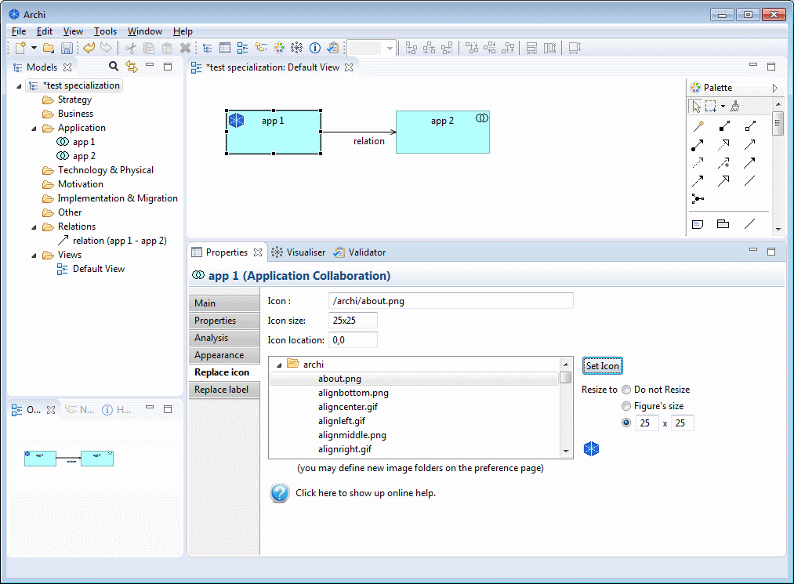
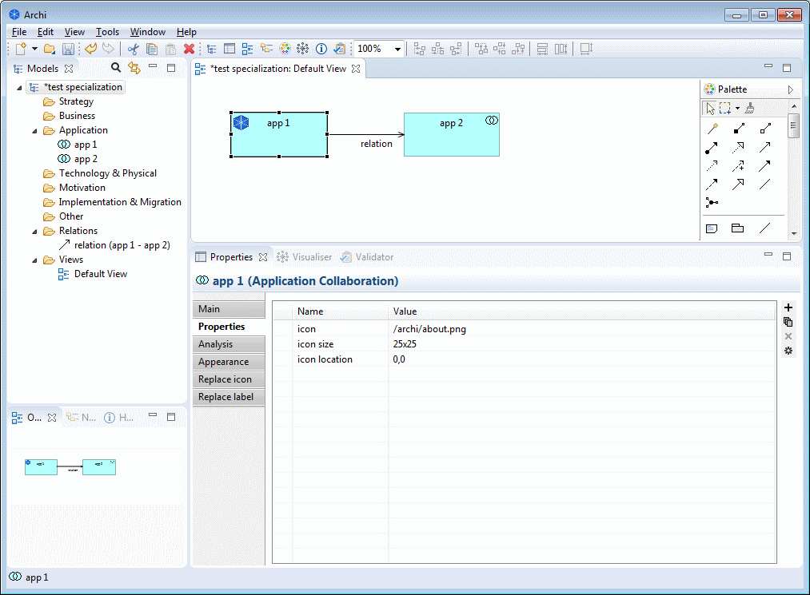

Specialization plugin
Replace icon

When an element that contains an icon is selected in a view, a new "Replace icon" tab is shown in the properties window.
- Icon
- The text field allows to enter an image filename that will replace the icon of the component.
- This filename can begin with a "/" but this is not mandatory.
- The first part of the path must be one of the folders that is configured in the preference page and will be mapped to the corresponding physical location.
- Icon size
- It is possible to resize the image, specifying the new size under the following format:
- width x height → to specify the width and the height (in pixels)
- width x 0 or 0 x height → to scale the image (the zero value will be calculated to keep the image proportion)
- auto → to automatically reclculate the image size to fit in the element rectangle
>
- An empty value keeps the image to its original size
- Icon location
- It is possible to change the image location under the following format:
- x , y → to specify the horizontal and the vertical position (in pixels)
- positive values are related to the top or the left border, negative values are related to the bottom or right border
- "center" keyword allows the center the image
>
- An empty value keeps the image to its original size
Please note that all Archi elements do not have an icon that can be changed (like Value or Meaning) and that some elements have got several figures (like the Node) which all of them do not implement an icon.
It is also possible to set the properties by hand.

if you experience a "you must configure the view or the model to allow icons replacement" message, this means that you view does not allow the icons replacement.
You may change one of the following: